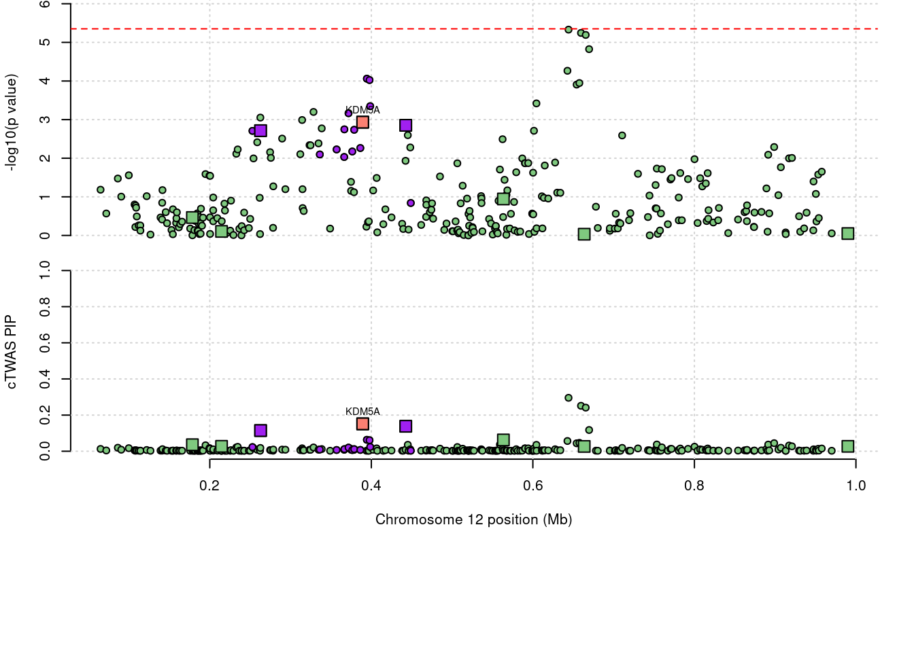

WhiteBlood - WholeBlood gene expression
sheng Qian
2023-2-1
Last updated: 2023-02-15
Checks: 5 2
Knit directory: cTWAS_analysis/
This reproducible R Markdown analysis was created with workflowr (version 1.7.0). The Checks tab describes the reproducibility checks that were applied when the results were created. The Past versions tab lists the development history.
The R Markdown file has unstaged changes. To know which version of the R Markdown file created these results, you’ll want to first commit it to the Git repo. If you’re still working on the analysis, you can ignore this warning. When you’re finished, you can run wflow_publish to commit the R Markdown file and build the HTML.
Great job! The global environment was empty. Objects defined in the global environment can affect the analysis in your R Markdown file in unknown ways. For reproduciblity it’s best to always run the code in an empty environment.
The command set.seed(20211220) was run prior to running the code in the R Markdown file. Setting a seed ensures that any results that rely on randomness, e.g. subsampling or permutations, are reproducible.
Great job! Recording the operating system, R version, and package versions is critical for reproducibility.
Nice! There were no cached chunks for this analysis, so you can be confident that you successfully produced the results during this run.
Using absolute paths to the files within your workflowr project makes it difficult for you and others to run your code on a different machine. Change the absolute path(s) below to the suggested relative path(s) to make your code more reproducible.
| absolute | relative |
|---|---|
| /project2/xinhe/shengqian/cTWAS/cTWAS_analysis/data/ | data |
| /project2/xinhe/shengqian/cTWAS/cTWAS_analysis/code/ctwas_config_b38.R | code/ctwas_config_b38.R |
| /project2/xinhe/shengqian/cTWAS/cTWAS_analysis/data/G_list.RData | data/G_list.RData |
| /project2/xinhe/shengqian/cTWAS/cTWAS_analysis/code/locus_plot.R | code/locus_plot.R |
Great! You are using Git for version control. Tracking code development and connecting the code version to the results is critical for reproducibility.
The results in this page were generated with repository version 097dbbc. See the Past versions tab to see a history of the changes made to the R Markdown and HTML files.
Note that you need to be careful to ensure that all relevant files for the analysis have been committed to Git prior to generating the results (you can use wflow_publish or wflow_git_commit). workflowr only checks the R Markdown file, but you know if there are other scripts or data files that it depends on. Below is the status of the Git repository when the results were generated:
Ignored files:
Ignored: .Rhistory
Ignored: .ipynb_checkpoints/
Untracked files:
Untracked: Proposal plots.R
Untracked: RGS14.pdf
Untracked: RNF186.pdf
Untracked: SCZ_annotation.xlsx
Untracked: SLC8B1.pdf
Untracked: analysis/.ipynb_checkpoints/
Untracked: cache/
Untracked: code/.ipynb_checkpoints/
Untracked: data/.ipynb_checkpoints/
Untracked: data/FUMA_output/
Untracked: data/GO_Terms/
Untracked: data/GTEx_Analysis_v8_eQTL.tar
Untracked: data/G_list.RData
Untracked: data/IBD_ME/
Untracked: data/LDL/
Untracked: data/LDL_E_S/
Untracked: data/LDL_M/
Untracked: data/LDL_S/
Untracked: data/PGC3_SCZ_wave3_public.v2.tsv
Untracked: data/SCZ/
Untracked: data/SCZ_2018/
Untracked: data/SCZ_2018_S/
Untracked: data/SCZ_2020/
Untracked: data/SCZ_S/
Untracked: data/Supplementary Table 15 - MAGMA.xlsx
Untracked: data/Supplementary Table 20 - Prioritised Genes.xlsx
Untracked: data/UKBB/
Untracked: data/UKBB_SNPs_Info.text
Untracked: data/WhiteBlood_E/
Untracked: data/WhiteBlood_E_M/
Untracked: data/WhiteBlood_E_S_M/
Untracked: data/WhiteBlood_M/
Untracked: data/cpg_annot.RData
Untracked: data/eqtl/
Untracked: data/gencode.v26.GRCh38.genes.gtf
Untracked: data/gene_OMIM.txt
Untracked: data/gene_pip_0.8.txt
Untracked: data/gwas_sumstats/
Untracked: data/magma.genes.out
Untracked: data/mashr_Heart_Atrial_Appendage.db
Untracked: data/mashr_sqtl/
Untracked: data/mqtl/
Untracked: data/notes.txt
Untracked: data/scz_2018.RDS
Untracked: data/summary_known_genes_annotations.xlsx
Untracked: temp_LDR/
Unstaged changes:
Deleted: analysis/Atrial_Fibrillation_Heart_Atrial_Appendage.Rmd
Deleted: analysis/Atrial_Fibrillation_Heart_Left_Ventricle.Rmd
Deleted: analysis/Autism_Brain_Amygdala.Rmd
Deleted: analysis/Autism_Brain_Anterior_cingulate_cortex_BA24.Rmd
Deleted: analysis/Autism_Brain_Caudate_basal_ganglia.Rmd
Deleted: analysis/Autism_Brain_Cerebellar_Hemisphere.Rmd
Deleted: analysis/Autism_Brain_Cerebellum.Rmd
Deleted: analysis/Autism_Brain_Cortex.Rmd
Deleted: analysis/Autism_Brain_Frontal_Cortex_BA9.Rmd
Deleted: analysis/Autism_Brain_Hippocampus.Rmd
Deleted: analysis/Autism_Brain_Hypothalamus.Rmd
Deleted: analysis/Autism_Brain_Nucleus_accumbens_basal_ganglia.Rmd
Deleted: analysis/Autism_Brain_Putamen_basal_ganglia.Rmd
Deleted: analysis/Autism_Brain_Spinal_cord_cervical_c-1.Rmd
Deleted: analysis/Autism_Brain_Substantia_nigra.Rmd
Deleted: analysis/BMI_Brain_Amygdala.Rmd
Deleted: analysis/BMI_Brain_Amygdala_S.Rmd
Deleted: analysis/BMI_Brain_Anterior_cingulate_cortex_BA24.Rmd
Deleted: analysis/BMI_Brain_Anterior_cingulate_cortex_BA24_S.Rmd
Deleted: analysis/BMI_Brain_Caudate_basal_ganglia.Rmd
Deleted: analysis/BMI_Brain_Caudate_basal_ganglia_S.Rmd
Deleted: analysis/BMI_Brain_Cerebellar_Hemisphere.Rmd
Deleted: analysis/BMI_Brain_Cerebellar_Hemisphere_S.Rmd
Deleted: analysis/BMI_Brain_Cerebellum.Rmd
Deleted: analysis/BMI_Brain_Cerebellum_S.Rmd
Deleted: analysis/BMI_Brain_Cortex.Rmd
Deleted: analysis/BMI_Brain_Cortex_S.Rmd
Deleted: analysis/BMI_Brain_Frontal_Cortex_BA9.Rmd
Deleted: analysis/BMI_Brain_Frontal_Cortex_BA9_S.Rmd
Deleted: analysis/BMI_Brain_Hippocampus.Rmd
Deleted: analysis/BMI_Brain_Hippocampus_S.Rmd
Deleted: analysis/BMI_Brain_Hypothalamus.Rmd
Deleted: analysis/BMI_Brain_Hypothalamus_S.Rmd
Deleted: analysis/BMI_Brain_Nucleus_accumbens_basal_ganglia.Rmd
Deleted: analysis/BMI_Brain_Nucleus_accumbens_basal_ganglia_S.Rmd
Deleted: analysis/BMI_Brain_Putamen_basal_ganglia.Rmd
Deleted: analysis/BMI_Brain_Putamen_basal_ganglia_S.Rmd
Deleted: analysis/BMI_Brain_Spinal_cord_cervical_c-1.Rmd
Deleted: analysis/BMI_Brain_Spinal_cord_cervical_c-1_S.Rmd
Deleted: analysis/BMI_Brain_Substantia_nigra.Rmd
Deleted: analysis/BMI_Brain_Substantia_nigra_S.Rmd
Deleted: analysis/BMI_S_results.Rmd
Deleted: analysis/Glucose_Adipose_Subcutaneous.Rmd
Deleted: analysis/Glucose_Adipose_Visceral_Omentum.Rmd
Modified: analysis/LDL_Liver_GTEX.Rmd
Modified: analysis/LDL_Liver_GTEX_mashr.Rmd
Modified: analysis/WhiteBlood_WholeBlood_E.Rmd
Modified: analysis/WhiteBlood_WholeBlood_E_M.Rmd
Modified: analysis/WhiteBlood_WholeBlood_E_S_M.Rmd
Modified: analysis/WhiteBlood_WholeBlood_M.Rmd
Modified: code/LDL_out/LDL_Liver_GTEx_mashr.err
Modified: code/LDL_out/LDL_Liver_GTEx_mashr.out
Deleted: code/White_Blood_M_out/White_Blood_BreastMammary.err
Deleted: code/White_Blood_M_out/White_Blood_BreastMammary.out
Deleted: code/White_Blood_M_out/White_Blood_ColonTransverse.err
Deleted: code/White_Blood_M_out/White_Blood_ColonTransverse.out
Deleted: code/White_Blood_M_out/White_Blood_KidneyCortex.err
Deleted: code/White_Blood_M_out/White_Blood_KidneyCortex.out
Deleted: code/White_Blood_M_out/White_Blood_Lung.err
Deleted: code/White_Blood_M_out/White_Blood_Lung.out
Deleted: code/White_Blood_M_out/White_Blood_MuscleSkeletal.err
Deleted: code/White_Blood_M_out/White_Blood_MuscleSkeletal.out
Deleted: code/White_Blood_M_out/White_Blood_Ovary.err
Deleted: code/White_Blood_M_out/White_Blood_Ovary.out
Deleted: code/White_Blood_M_out/White_Blood_Prostate.err
Deleted: code/White_Blood_M_out/White_Blood_Prostate.out
Deleted: code/White_Blood_M_out/White_Blood_Testis.err
Deleted: code/White_Blood_M_out/White_Blood_Testis.out
Deleted: code/White_Blood_M_out/White_Blood_WholeBlood.err
Deleted: code/White_Blood_M_out/White_Blood_WholeBlood.out
Deleted: code/run_IBD_ctwas_rss_LDR_ME.R
Note that any generated files, e.g. HTML, png, CSS, etc., are not included in this status report because it is ok for generated content to have uncommitted changes.
These are the previous versions of the repository in which changes were made to the R Markdown (analysis/WhiteBlood_WholeBlood_E.Rmd) and HTML (docs/WhiteBlood_WholeBlood_E.html) files. If you’ve configured a remote Git repository (see ?wflow_git_remote), click on the hyperlinks in the table below to view the files as they were in that past version.
| File | Version | Author | Date | Message |
|---|---|---|---|---|
| Rmd | ada1828 | sq-96 | 2023-02-12 | update |
| Rmd | f49450b | sq-96 | 2023-02-04 | update |
| html | f49450b | sq-96 | 2023-02-04 | update |
| Rmd | da7a0f7 | sq-96 | 2023-02-03 | update |
| html | da7a0f7 | sq-96 | 2023-02-03 | update |
| Rmd | 66590cb | sq-96 | 2023-02-03 | update |
| html | 66590cb | sq-96 | 2023-02-03 | update |
| Rmd | 9b01dad | sq-96 | 2023-02-01 | update |
| html | 9b01dad | sq-96 | 2023-02-01 | update |
Weight QC
[1] 12623[1] 11198
1 2 3 4 5 6 7 8 9 10 11 12 13 14 15 16
1137 750 626 401 487 626 562 394 412 432 686 659 194 368 335 553
17 18 19 20 21 22
731 163 925 315 131 311 [1] 0.7637Load ctwas results
Check convergence of parameters
#estimated group prior
estimated_group_prior <- estimated_group_prior_all[,ncol(group_prior_rec)]
print(estimated_group_prior) SNP gene
0.0002005 0.0230977 #estimated group prior variance
estimated_group_prior_var <- estimated_group_prior_var_all[,ncol(group_prior_var_rec)]
print(estimated_group_prior_var) SNP gene
17.23 20.04 #estimated enrichment
estimated_enrichment <- estimated_enrichment_all[ncol(group_prior_var_rec)]
print(estimated_enrichment)[1] 115.2#report sample size
print(sample_size)[1] 350470#report group size
print(group_size) SNP gene
8696600 11198 #estimated group PVE
estimated_group_pve <- estimated_group_pve_all[,ncol(group_prior_rec)]
print(estimated_group_pve) SNP gene
0.08573 0.01479 #total PVE
sum(estimated_group_pve)[1] 0.1005#attributable PVE
estimated_group_pve/sum(estimated_group_pve) SNP gene
0.8529 0.1471 Genes with highest PIPs
#distribution of PIPs
hist(ctwas_gene_res$susie_pip, xlim=c(0,1), main="Distribution of Gene PIPs")
| Version | Author | Date |
|---|---|---|
| 9b01dad | sq-96 | 2023-02-01 |
#genes with PIP>0.8 or 20 highest PIPs
head(ctwas_gene_res[order(-ctwas_gene_res$susie_pip),report_cols], max(sum(ctwas_gene_res$susie_pip>0.8), 20)) genename region_tag susie_pip mu2 PVE z num_eqtl
9507 FES 15_43 1.0000 75.21 2.146e-04 -8.837 3
7481 TAGAP 6_103 1.0000 71.50 2.040e-04 -8.435 2
893 ARHGAP15 2_85 1.0000 51.47 1.469e-04 9.193 3
3646 BAZ2B 2_96 0.9999 73.40 2.094e-04 11.102 2
5966 VLDLR 9_3 0.9999 54.07 1.543e-04 7.817 4
1640 KIAA0391 14_9 0.9997 47.50 1.355e-04 7.370 2
7070 LAPTM5 1_20 0.9991 69.47 1.980e-04 9.117 3
10398 SLC22A4 5_79 0.9990 144.87 4.129e-04 13.754 2
5767 MED12L 3_93 0.9979 32.98 9.392e-05 -5.427 2
5908 CREB5 7_24 0.9978 368.79 1.050e-03 -20.722 1
5665 CNIH4 1_114 0.9977 102.42 2.915e-04 -9.422 2
7272 ATXN7 3_43 0.9966 48.09 1.367e-04 -3.630 3
4571 CD101 1_72 0.9959 39.88 1.133e-04 6.274 3
2611 ALDH2 12_67 0.9940 140.78 3.993e-04 -15.815 3
2818 SLC12A7 5_2 0.9933 41.51 1.177e-04 6.027 4
2131 ATP13A1 19_15 0.9932 41.79 1.184e-04 6.167 2
9863 LAMP1 13_62 0.9919 39.52 1.119e-04 -6.303 1
1102 SLC25A24 1_67 0.9914 35.48 1.004e-04 5.941 3
736 HDHD5 22_1 0.9910 25.04 7.079e-05 4.132 3
2312 LIPA 10_57 0.9886 41.77 1.178e-04 6.386 4
10100 SELL 1_83 0.9875 25.36 7.145e-05 3.904 3
5360 NLRC5 16_31 0.9859 44.70 1.258e-04 6.576 2
8044 TTC39C 18_12 0.9851 40.30 1.133e-04 5.211 1
9899 KIF18B 17_26 0.9822 26.92 7.545e-05 5.374 1
1603 SPTLC2 14_36 0.9803 23.87 6.677e-05 -4.039 2
6064 PTPRJ 11_29 0.9791 67.95 1.898e-04 -9.818 2
8108 TET2 4_69 0.9753 24.58 6.839e-05 -5.284 2
412 ARAP2 4_30 0.9741 66.74 1.855e-04 -8.262 2
6686 HIST1H2BD 6_20 0.9706 62.56 1.732e-04 9.575 1
4658 OSTF1 9_35 0.9700 21.78 6.028e-05 4.248 3
9410 DDX60L 4_109 0.9694 21.89 6.056e-05 4.461 5
9272 ZFPM1 16_54 0.9655 36.82 1.014e-04 -4.645 1
171 UQCRC1 3_34 0.9654 29.53 8.135e-05 -5.030 1
2844 CPEB4 5_104 0.9652 123.69 3.407e-04 12.452 2
3293 KLF12 13_36 0.9636 39.69 1.091e-04 -6.340 1
811 ACAP1 17_6 0.9635 62.98 1.732e-04 7.733 2
1426 POLR2E 19_2 0.9625 34.89 9.582e-05 -5.383 5
3323 NEK6 9_64 0.9573 25.83 7.057e-05 5.706 2
9755 UBOX5 20_5 0.9563 27.79 7.582e-05 -4.863 1
1160 ADD1 4_4 0.9540 33.19 9.035e-05 -7.073 1
3758 ATXN1 6_13 0.9531 65.48 1.781e-04 8.173 1
1273 GLG1 16_40 0.9503 24.89 6.748e-05 4.683 2
9287 CITED4 1_25 0.9451 27.11 7.311e-05 -4.750 2
2410 MLX 17_25 0.9418 56.88 1.529e-04 7.850 2
4385 TBC1D14 4_8 0.9394 28.71 7.694e-05 6.255 1
4883 HS6ST1 2_75 0.9379 20.23 5.413e-05 -4.140 1
10114 PAQR9 3_87 0.9354 21.31 5.689e-05 -4.082 2
982 CDC14A 1_61 0.9274 19.52 5.166e-05 3.825 2
10454 ELANE 19_2 0.9255 24.67 6.516e-05 -4.552 2
11564 CD302 2_96 0.9255 33.18 8.761e-05 -6.789 4
4103 AP1M2 19_9 0.9234 39.13 1.031e-04 5.099 4
1408 MYO9B 19_14 0.9084 28.49 7.385e-05 5.238 1
1145 ACHE 7_62 0.9074 36.67 9.493e-05 -3.852 1
8131 RNF181 2_54 0.9056 35.98 9.296e-05 -5.029 1
574 CA11 19_33 0.8993 33.13 8.502e-05 -5.574 2
380 RAI14 5_23 0.8939 19.21 4.899e-05 3.788 1
2053 CCDC9 19_33 0.8920 38.30 9.748e-05 6.874 3
9299 CCR8 3_28 0.8914 21.87 5.563e-05 -2.931 1
1386 ITPR3 6_28 0.8913 40.33 1.026e-04 6.228 5
11657 RNF139-AS1 8_82 0.8843 22.67 5.719e-05 4.450 2
5598 RORC 1_74 0.8837 20.27 5.111e-05 4.101 1
162 TRAF3IP3 1_106 0.8836 24.47 6.170e-05 4.756 2
4670 ADAM19 5_93 0.8827 22.67 5.708e-05 4.089 2
6935 CPSF4 7_61 0.8817 52.18 1.313e-04 -7.253 2
208 PPP5C 19_32 0.8812 25.24 6.346e-05 -4.940 2
5834 TNFAIP8 5_72 0.8764 54.49 1.363e-04 7.624 1
2437 SLC9A3R1 17_42 0.8750 47.02 1.174e-04 -7.630 1
2447 RAB34 17_18 0.8747 23.97 5.983e-05 -4.508 2
5078 DTNB 2_15 0.8737 22.06 5.498e-05 -4.590 2
7233 EOMES 3_20 0.8598 55.96 1.373e-04 7.596 1
8952 UBE2O 17_43 0.8587 27.63 6.769e-05 -5.502 2
755 JMJD6 17_43 0.8561 25.17 6.147e-05 4.742 1
6143 MTMR12 5_22 0.8390 20.75 4.966e-05 -4.003 1
12096 LINC01970 17_47 0.8361 31.57 7.533e-05 -5.271 1
1074 REST 4_41 0.8315 96.36 2.286e-04 9.019 1
9085 GPR4 19_32 0.8299 20.77 4.919e-05 4.252 1
8907 LRRC25 19_15 0.8298 27.13 6.425e-05 -4.768 1
2813 NPR3 5_22 0.8297 21.29 5.041e-05 4.146 1
3430 SMAD9 13_13 0.8271 22.52 5.315e-05 -4.407 2
11105 MEG3 14_52 0.8256 33.96 8.000e-05 5.342 1
4448 ZBED3 5_45 0.8219 19.79 4.641e-05 3.802 2
10656 RCSD1 1_82 0.8196 22.26 5.205e-05 4.345 3
323 RABEP1 17_5 0.8177 61.95 1.445e-04 8.751 2
10280 C20orf96 20_1 0.8123 19.78 4.584e-05 -3.889 2
6513 PXYLP1 3_86 0.8073 31.62 7.283e-05 7.219 2
1768 KLF5 13_35 0.8028 23.54 5.392e-05 -4.513 1GO enrichment analysis for genes with PIP>0.8
#number of genes for gene set enrichment
length(genes)[1] 86DisGeNET enrichment analysis for genes with PIP>0.5
Description FDR Ratio BgRatio
11 Refractory anaemia with excess blasts 0.05522 1/45 1/9703
19 Malignant neoplasm of urinary bladder 0.05522 4/45 141/9703
20 Bladder Neoplasm 0.05522 4/45 140/9703
28 Cholesterol Ester Storage Disease 0.05522 1/45 1/9703
49 Freckles 0.05522 1/45 1/9703
70 Melanosis 0.05522 1/45 1/9703
71 Chloasma 0.05522 1/45 1/9703
112 Wolman Disease 0.05522 1/45 1/9703
133 Cyclic neutropenia 0.05522 1/45 1/9703
134 Cerebellar Gait Ataxia 0.05522 1/45 1/9703WebGestalt enrichment analysis for genes with PIP>0.5
Loading the functional categories...
Loading the ID list...
Loading the reference list...
Performing the enrichment analysis...Warning in oraEnrichment(interestGeneList, referenceGeneList, geneSet, minNum =
minNum, : No significant gene set is identified based on FDR 0.05!NULLLoading required package: S4VectorsLoading required package: stats4Loading required package: BiocGenerics
Attaching package: 'BiocGenerics'The following objects are masked from 'package:stats':
IQR, mad, sd, var, xtabsThe following objects are masked from 'package:base':
anyDuplicated, append, as.data.frame, basename, cbind, colnames,
dirname, do.call, duplicated, eval, evalq, Filter, Find, get, grep,
grepl, intersect, is.unsorted, lapply, Map, mapply, match, mget,
order, paste, pmax, pmax.int, pmin, pmin.int, Position, rank,
rbind, Reduce, rownames, sapply, setdiff, sort, table, tapply,
union, unique, unsplit, which.max, which.min
Attaching package: 'S4Vectors'The following objects are masked from 'package:base':
expand.grid, I, unnameLoading required package: IRangesLoading required package: GenomicRangesLoading required package: GenomeInfoDbLoading required package: grida <- locus_plot(region_tag="17_34", return_table=T,
focus=NULL,
label_genes=NULL,
rerun_ctwas=F,
rerun_load_only=F,
label_panel="both",
legend_side="left",
legend_panel="")a <- locus_plot(region_tag="19_32", return_table=T,
focus=NULL,
label_genes=NULL,
rerun_ctwas=F,
rerun_load_only=F,
label_panel="both",
legend_side="left",
legend_panel="")a <- locus_plot(region_tag="12_1", return_table=T,
focus=NULL,
label_genes=NULL,
rerun_ctwas=F,
rerun_load_only=F,
label_panel="both",
legend_side="left",
legend_panel="")
| Version | Author | Date |
|---|---|---|
| 66590cb | sq-96 | 2023-02-03 |
a <- locus_plot(region_tag="2_14", return_table=T,
focus=NULL,
label_genes=NULL,
rerun_ctwas=F,
rerun_load_only=F,
label_panel="both",
legend_side="left",
legend_panel="")
sessionInfo()R version 4.1.0 (2021-05-18)
Platform: x86_64-pc-linux-gnu (64-bit)
Running under: CentOS Linux 7 (Core)
Matrix products: default
BLAS/LAPACK: /software/openblas-0.3.13-el7-x86_64/lib/libopenblas_haswellp-r0.3.13.so
locale:
[1] LC_CTYPE=en_US.UTF-8 LC_NUMERIC=C
[3] LC_TIME=en_US.UTF-8 LC_COLLATE=en_US.UTF-8
[5] LC_MONETARY=en_US.UTF-8 LC_MESSAGES=en_US.UTF-8
[7] LC_PAPER=en_US.UTF-8 LC_NAME=C
[9] LC_ADDRESS=C LC_TELEPHONE=C
[11] LC_MEASUREMENT=en_US.UTF-8 LC_IDENTIFICATION=C
attached base packages:
[1] grid stats4 stats graphics grDevices utils datasets
[8] methods base
other attached packages:
[1] Gviz_1.38.4 GenomicRanges_1.46.1 GenomeInfoDb_1.30.1
[4] IRanges_2.28.0 S4Vectors_0.32.4 BiocGenerics_0.40.0
[7] WebGestaltR_0.4.4 disgenet2r_0.99.2 enrichR_3.1
[10] cowplot_1.1.1 ggplot2_3.4.0 workflowr_1.7.0
loaded via a namespace (and not attached):
[1] backports_1.2.1 Hmisc_4.7-2
[3] BiocFileCache_2.2.1 systemfonts_1.0.4
[5] plyr_1.8.8 igraph_1.3.5
[7] lazyeval_0.2.2 splines_4.1.0
[9] BiocParallel_1.28.3 digest_0.6.31
[11] ensembldb_2.18.4 foreach_1.5.2
[13] htmltools_0.5.4 fansi_1.0.3
[15] checkmate_2.1.0 magrittr_2.0.3
[17] memoise_2.0.1 BSgenome_1.62.0
[19] cluster_2.1.2 doParallel_1.0.17
[21] tzdb_0.3.0 Biostrings_2.62.0
[23] readr_2.1.3 matrixStats_0.63.0
[25] vroom_1.6.0 svglite_2.1.0
[27] prettyunits_1.1.1 jpeg_0.1-10
[29] colorspace_2.0-3 blob_1.2.3
[31] rappdirs_0.3.3 xfun_0.35
[33] dplyr_1.0.10 callr_3.7.3
[35] crayon_1.5.2 RCurl_1.98-1.9
[37] jsonlite_1.8.4 VariantAnnotation_1.40.0
[39] survival_3.2-11 iterators_1.0.14
[41] glue_1.6.2 gtable_0.3.1
[43] zlibbioc_1.40.0 XVector_0.34.0
[45] DelayedArray_0.20.0 apcluster_1.4.10
[47] scales_1.2.1 DBI_1.1.3
[49] rngtools_1.5.2 Rcpp_1.0.9
[51] htmlTable_2.4.1 progress_1.2.2
[53] foreign_0.8-81 bit_4.0.5
[55] Formula_1.2-4 htmlwidgets_1.6.0
[57] httr_1.4.4 RColorBrewer_1.1-3
[59] ellipsis_0.3.2 pkgconfig_2.0.3
[61] XML_3.99-0.13 farver_2.1.0
[63] nnet_7.3-16 sass_0.4.4
[65] dbplyr_2.2.1 deldir_1.0-6
[67] utf8_1.2.2 tidyselect_1.2.0
[69] labeling_0.4.2 rlang_1.0.6
[71] reshape2_1.4.4 later_1.3.0
[73] AnnotationDbi_1.56.2 munsell_0.5.0
[75] tools_4.1.0 cachem_1.0.6
[77] cli_3.4.1 generics_0.1.3
[79] RSQLite_2.2.19 evaluate_0.19
[81] stringr_1.5.0 fastmap_1.1.0
[83] yaml_2.3.6 processx_3.8.0
[85] knitr_1.41 bit64_4.0.5
[87] fs_1.5.2 AnnotationFilter_1.18.0
[89] KEGGREST_1.34.0 doRNG_1.8.2
[91] whisker_0.4.1 xml2_1.3.3
[93] biomaRt_2.50.3 compiler_4.1.0
[95] rstudioapi_0.14 filelock_1.0.2
[97] curl_4.3.2 png_0.1-8
[99] tibble_3.1.8 bslib_0.4.1
[101] stringi_1.7.8 highr_0.9
[103] ps_1.7.2 GenomicFeatures_1.46.5
[105] lattice_0.20-44 ProtGenerics_1.26.0
[107] Matrix_1.3-3 vctrs_0.5.1
[109] pillar_1.8.1 lifecycle_1.0.3
[111] jquerylib_0.1.4 data.table_1.14.6
[113] bitops_1.0-7 httpuv_1.6.7
[115] rtracklayer_1.54.0 R6_2.5.1
[117] BiocIO_1.4.0 latticeExtra_0.6-30
[119] promises_1.2.0.1 gridExtra_2.3
[121] codetools_0.2-18 dichromat_2.0-0.1
[123] assertthat_0.2.1 SummarizedExperiment_1.24.0
[125] rprojroot_2.0.3 rjson_0.2.21
[127] withr_2.5.0 GenomicAlignments_1.30.0
[129] Rsamtools_2.10.0 GenomeInfoDbData_1.2.7
[131] parallel_4.1.0 hms_1.1.2
[133] rpart_4.1-15 rmarkdown_2.19
[135] MatrixGenerics_1.6.0 git2r_0.30.1
[137] biovizBase_1.42.0 getPass_0.2-2
[139] Biobase_2.54.0 base64enc_0.1-3
[141] interp_1.1-3 restfulr_0.0.15